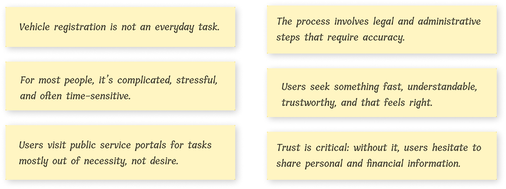
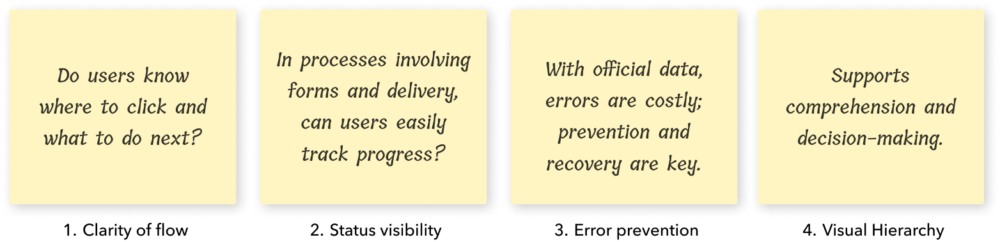
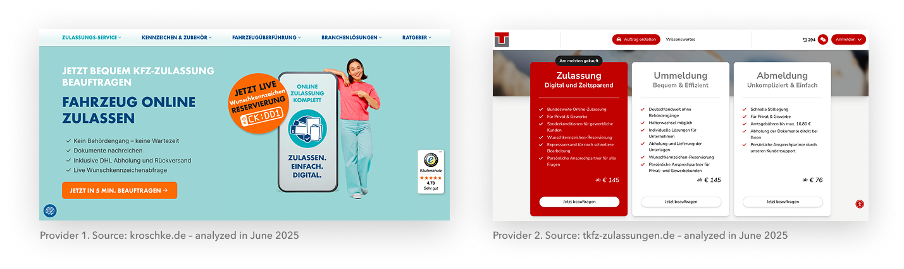
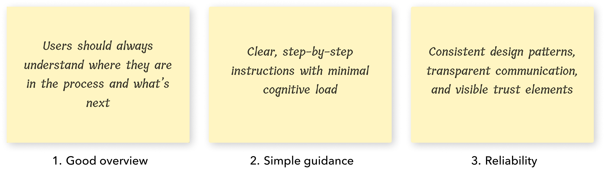
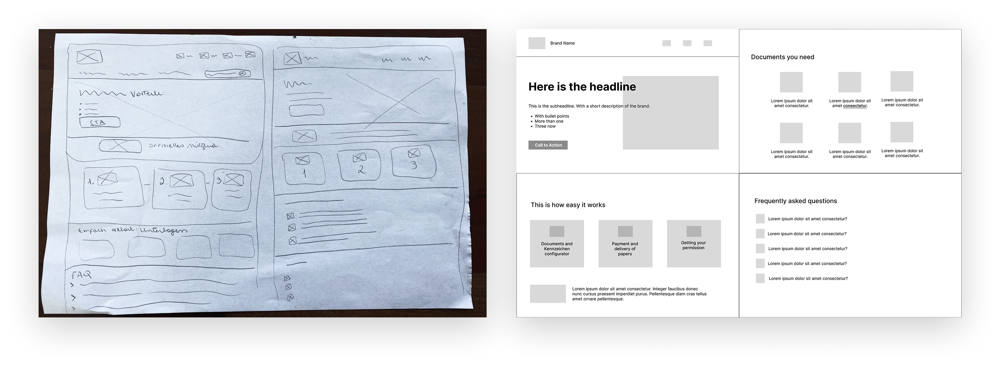
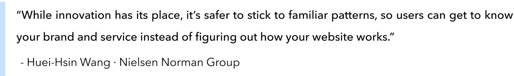

UX Case Study: Online Vehicle Registration
OVERVIEW
This case study was based on a design challenge provided during an interview process. The task was to research and compare two specific online vehicle registration providers and identify usability issues, proposing a concept for an improved landing page.
Access the live mockup on Figma
here.
METHODOLOGY
Design Thinking, Double Diamond, Heuristic Evaluation, Competitive Benchmarking
DURATION June 2025 – July 2025
DISCOVER PHASE
Before designing, I mapped the service context, user goals, and process constraints for online vehicle registration. I combined quick desk research, competitor scans, and short user interviews to understand pain points, uncertainty about required documents, unclear next steps, and low visibility of progress across the flow.
Context & User Behaviour
Heuristic Evaluation
To analyze the existing services, I applied the UX Heuristics from the Nielsen Norman Group, a well-known research authority for digital products.
Competitive Benchmarking
The focus was on evaluating the entry experience, data collection, and overall usability, considering aspects such as clarity, navigation, call-to-action visibility, cost transparency, and visual hierarchy.
Each provider was analyzed through pros and issues, followed by a summary comparison highlighting the main differences and takeaways. This approach helps to understand what works well in digital registration flows and what could be optimized for better usability.
Provider 1:
- Pros: Friendly CTA, visible security seals, dynamic navigation, responsive.
- Issues: Misleading imagery, inconsistent navigation, weak feedback loops.
Provider 2:
- Pros: Better accessibility, presence of language toggles, modern, clear step-by-step navigation.
- Issues: Complex forms, unclear process steps and hierarchie, overuse of CTAs.
Comparison Summary
One provider offers a friendly and approachable experience: the process is easy to understand, the primary call-to-action is clear and motivating, and users can proceed efficiently through the steps. However, some design elements feel outdated, color contrasts are strong, and certain interface elements (like icons or duplicated headings) can reduce clarity. There is also limited transparency regarding total costs and no clear progress indicator, which can lead to uncertainty.
The other provider provides price transparency and structured workflows, which can be helpful for users who want to know costs upfront. At the same time, the interface relies on more technical language, multiple equally weighted CTAs, and lacks validation in some input fields, increasing the risk of errors. Mobile usability can also be challenging due to small input fields and dense layouts.
DEFINE PHASE
After identifying the main usability issues, I broadened my analysis to include other providers such as ADAC and Zulassungen.de, noting their strengths and positive patterns:
- Clearer navigation flows.
- More visual guidance for multi-step processes.
- Consistent use of trust-building elements.
From here, I explored possible functionalities that could improve the registration flow:
- Clearer navigation flows.
- More visual guidance for multi-step processes.
- Consistent use of trust-building elements.
Defining Design Priorities
DEVELOP PHASE
Beginning with paper sketches, I explored how to reduce clutter while highlighting the primary call-to-action. These ideas were then translated into Figma wireframes, where I structured the flow with a logical content order, strategically placed CTAs, and a clear overview to guide users step by step.
While refining the wireframes in Figma, I interviewed users who had experienced the registration process. They highlighted the biggest pain point as poor overview and lack of visibility across steps. To address this, I focused my design on simple structure, clear guidance, and a status-tracking feature that keeps users oriented throughout the process.
The Solution
The solution is intentionally simple to highlight the flow, while still leaving space for realistic future development.

Access the live mockup on Figma here.
Opportunities
While the prototype covers the core experience, there are several directions to continue developing this concept:
- Explore SEO and storytelling to increase visibility and connection.
- Improve language accessibility, making the service usable for non-native speakers
- Build a design system for consistency and scalability.
Takeaways
This project showed me that digital services often fail not because of missing features, but because they overwhelm users with too much information and too little structure. A clear overview and simple guidance can make even complex processes feel manageable.

More Projects